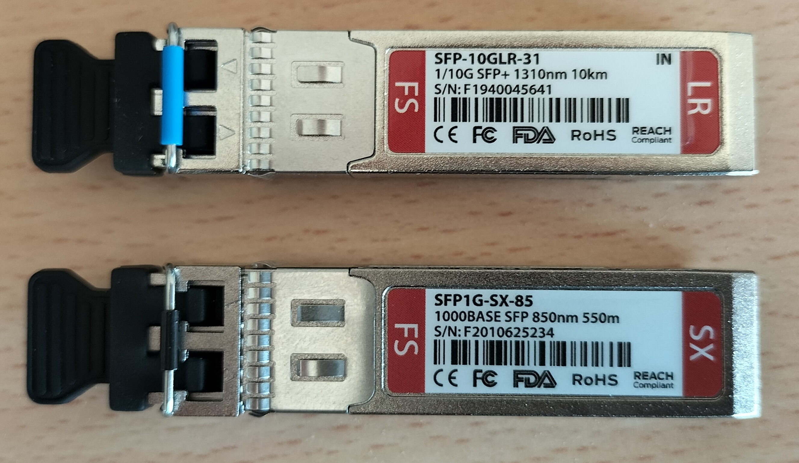
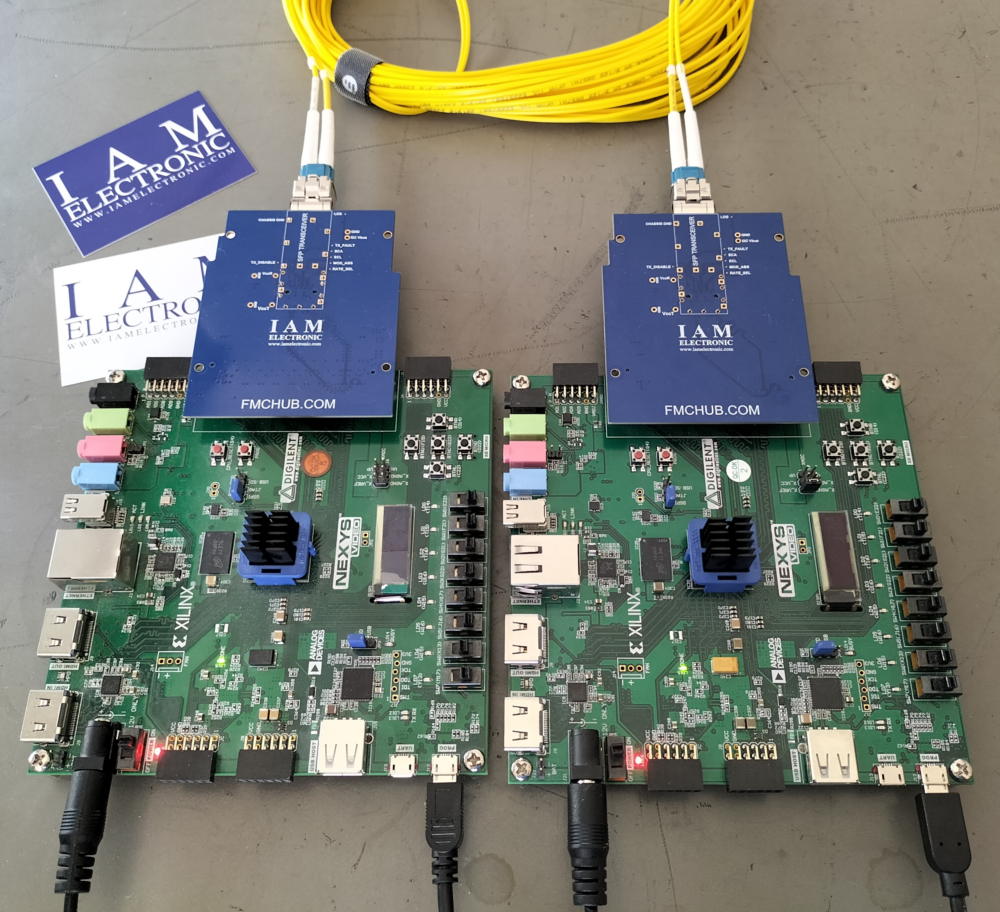
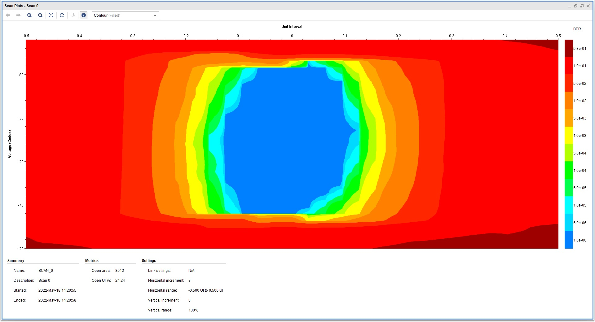
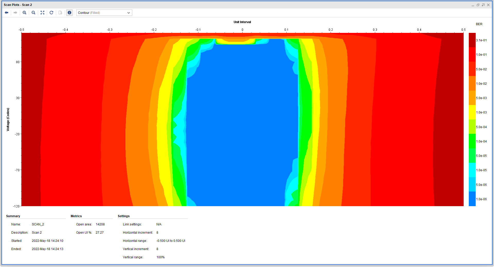
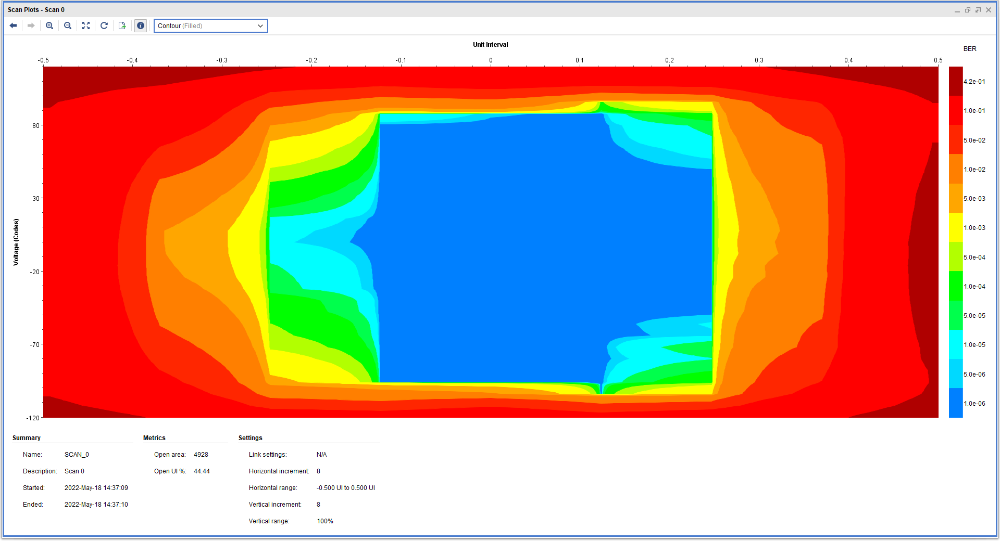
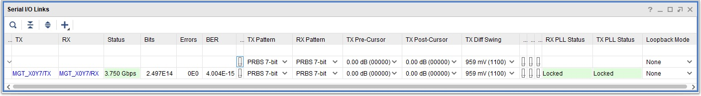
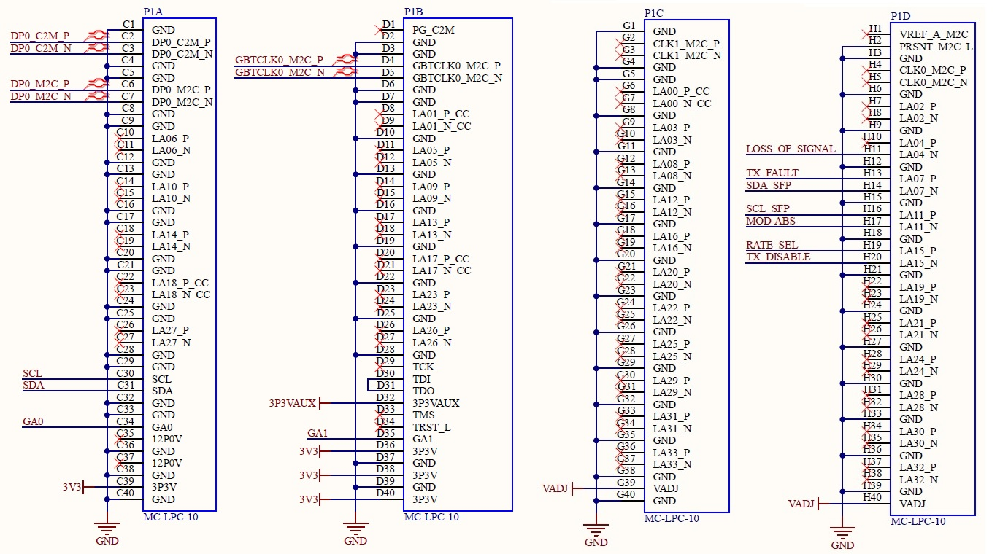
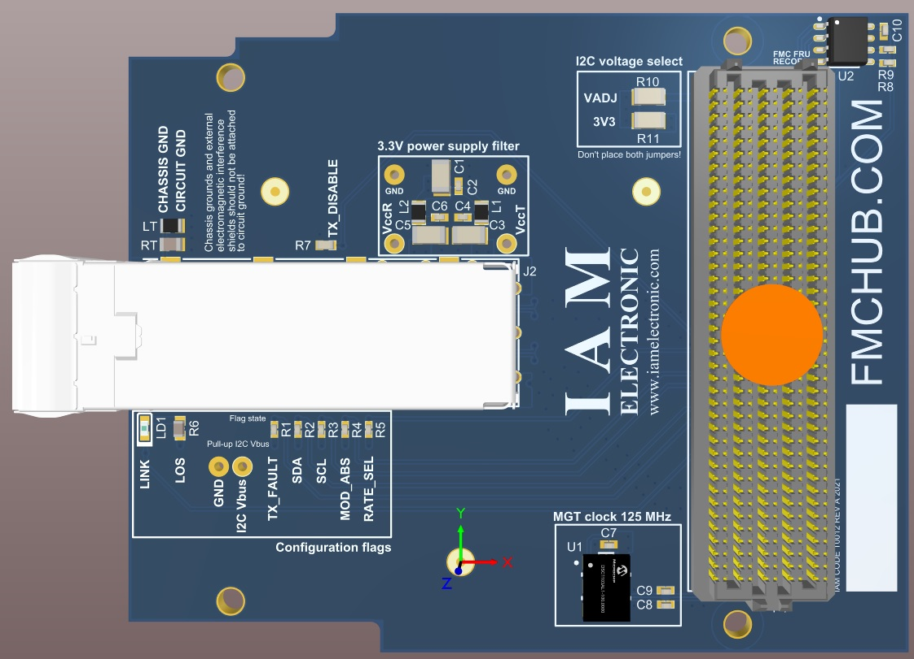
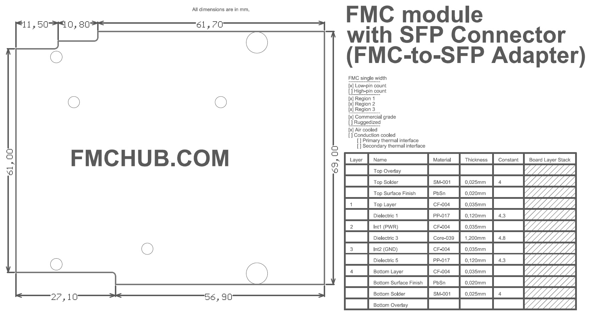

- Breakout of SFP connector
- Data rates up to 4 Gb/s
- ANSI/VITA 57.1 compliant
- Commercial grade form factor
- Low-pin count (LPC) connector
- Selectable I2C bus voltage (VADJ or 3P3V)
- Open-source hardware
- 1000BASE-X data links
- Board-to-board connections
- Testing and debugging of SFP transceivers
- Easy prototyping
- Loopback testing
- Research and education with FPGAs
The FMC SFP Adapter Board is a passive adapter for accessing the multi-gigabit transceiver data pair of the FMC low-pin count (LPC) connector. The DP0_C2M and DP0_M2C data pairs are connected to the 20-pin SFP board connector inside the single-port SFP cage. The board supports data rates up to 4 Gb/s, and is ideally suited for 1000BASE-X applications (Gigabit Ethernet transmission over fiber). An on-board oscillators provides a reference clock of 125.000 MHz to the GBTCLK signal pair (clock signal for multi-gigabit transceiver data pair). All electrical signals of the SFP transceiver are accessible via the FMC-LPC connector or test points on the PCB. No configuration of the card is necessary for easy startup.
1. Loopback test The modules can be used in a loopback test to check the components of a board-to-board connection. These tests are useful for evaluating an FPGA test design on carrierboard or transceiver tests. We have tested the FMC SFP adapter with various SFP optical transceivers.  Fig. 1: SFP transceivers used for testing the FMC SFP adapter. Our test have been carried out with two FMC carrier boards with Xilinx FPGAs (fig. 2). We use the Xilinx IBERT core for loopback testing. The "far end PMA" loopback mode must be enabled on one of the boards.  Fig. 2: FMC loopback configuration with two carrier boards and two FMC SFP adapter modules. The eyediagrams for different transceivers and data rates are shown in fig. 3 .. 5  Fig. 3: Eyediagram from Xilinx IBERT with 1000BASE SFP Transceivers in loopback configuration with 1.25 Gb/s.  Fig. 4: Eyediagram from Xilinx IBERT with 10G SFP+ Transceivers in loopback configuration with 1.25 Gb/s.  Fig. 5: Eyediagram from Xilinx IBERT with 10G SFP+ Transceivers in loopback configuration with 3.75 Gb/s. During all tests, we did not receive a single bit error. The bit error rate (BER) was also checked with the Xilinx IBERT core (fig. 6).  Fig. 6: The bit error rate of the FMC SFP adapter with a 10G SFP+ transceiver in loopback mode at 3.75 Gb/s.
The printed circuit board is open-source hardware! You can download the FMC LPC SFP Adapter board schematics and PCB layout files in their latest revision from http://www.fmchub.com.
3.1 Pinout of the FMC LPC Connector Fig. 7 and tab. 1 show the connections of the signals on the FMC connector P1  Fig. 7: Pin assignments of the FMC LPC connector P1.
| FMC pin name | FMC pin designator | SFP pin name |
| LA04_N | H11 | LOS (LOSS OF SIGNAL) |
| LA07_P | H13 | TX_FAULT |
| LA07_N | H14 | SDA |
| LA11_P | H16 | SCL |
| LA11_N | H17 | MOD-ABS |
| LA15_P | H19 | RS0 (RATE SELECT) |
| LA15_N | H20 | TX_DISABLE |
| DP0_C2M_P | C2 | TD+ |
| DP0_C2M_N | C3 | TD- |
| DP0_M2C_P | C6 | RD+ |
| DP0_M2C_N | C7 | RD- |
| GBTCLK0_M2C_P | D4 | 125 MHz clock + (to FPGA) |
| GBTCLK0_M2C_N | D5 | 125 MHz clock + (to FPGA) |
3.4 FMC FRU EEPROM The EEPROM for storing FMC FRU (field replaceable unit) information is an M24C02 with 2 Kbit (256 Byte). The FRU record determines the voltage on the VADJ rail of the FMC connector. By default, the FRU EEPROM is programmed to request 3.3 V from the carrier board. Further, the memory stores the board information such as manufacturer name and product number. The device can be read and written by the I2C interface of the FMC connector (Pins C30 and C31). The FMC SFP Adapter Board includes 4K7 pull-up resistors on the SCL and SDA signal lanes. The I2C address of the M24C02 is defined by the GA0 and GA1 pins of the FMC connector in accordance with the ANSI/VITA57.1 standard.
The board outline is defined by the ANSI/VITA 57.1 standard for single width FMC modules.   Fig. 8: Mechanical drawing of the FMC SFP Adapter board. The mounting holes are plated but have no electrical connection. Their sizes and positions are in accordance with ANSI/VITA 57.1 single width FMC modules.
| Product no. | Description | Market place | Request quote | Standard lead time |
| T0012 | FMC LPC SFP Adapter Board withMC-LPC-10 connector, SFP connector with cage and clock generatoron bottom side. | IAM Electronic Shop Ebay #185439240058 Tindie#26891 DigiKey6068-T0012-ND | info@iamelectronic.com | Normally in stock, otherwise 3 weeks |